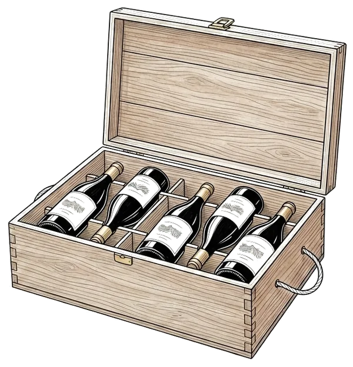

Pour les conseils en gestion de patrimoine
La cave de vos clients est un actif. Pas une ligne fantôme.
J'établis la valeur d'une cave à vins de manière indépendante, datée et documentée, pour l'intégrer à un bilan patrimonial, une succession ou une couverture d'assurance. À distance, sur photos, sous cinq jours ouvrés. Sans jamais acheter ni revendre une seule bouteille.

- 199 €, tarif uniquePar cave, quel que soit le nombre de bouteilles. Aucune rétrocommission.
- 5 jours ouvrésRapport PDF daté et documenté, 100 % à distance.
- 10 ans dans le monde du vinDont six ans responsable des ventes aux enchères.
- WSET niveau 3Avec distinction (2024).
Le constat
Connue, parfois précieuse, mais ni chiffrée, ni datée, ni documentée.
Dans un patrimoine, la cave appartient à la famille des actifs passion, au même titre que l'art, les montres ou les voitures de collection. Et comme eux, elle échappe à vos systèmes : les valeurs sont obsolètes, la documentation éparpillée entre une vieille expertise et une police d'assurance, et personne n'ose s'appuyer sur ces chiffres pour décider.
C'est précisément ce vide que je comble. Là où vous portez la cave « pour mémoire », je vous remets une valeur de référence que vous pouvez inscrire au bilan, transmettre à un notaire ou présenter à un assureur, en toute confiance.
Quatre moments de votre pratique
Un même document, quatre usages dans votre quotidien.
Inventaire
Bilan patrimonial
Une valeur chiffrée et traçable pour intégrer la cave à votre audit d'actifs et à vos outils d'agrégation, sans approximation ni angle mort.
Déclaration
Succession & transmission
Un inventaire détaillé et daté, à verser au dossier pour fiabiliser la déclaration de succession et éclairer le partage entre héritiers.
Fiscalité
Arbitrage & cession
Une valorisation de référence avant toute cession, pour calibrer l'opération et anticiper le régime de plus-value sur biens meubles applicable.
Couverture
Assurance objets de valeur
Une base solide de souscription ou de réévaluation d'un contrat objets de valeur, alignée sur la valeur réelle du marché secondaire.
Ce qui me distingue
L'indépendance qui vous protège.
Je n'achète pas, je ne revends pas, je ne perçois aucune rétrocommission, ni de vous, ni d'une maison de ventes. Vous pouvez me recommander sans craindre que la prestation se transforme en appel d'offre déguisé sur la cave de votre client. C'est une garantie qu'aucun acteur lié à la transaction ne peut offrir, et c'est ce qui préserve votre posture de conseil.

Qui établit la valeur
Une expertise du marché secondaire, pas une opinion.
Je m'appelle Fanny Lonqueu-Brochard. Pendant plus de six ans, j'ai dirigé les ventes aux enchères de vin. J'y ai estimé, calibré et adjugé des milliers de lots. C'est cette lecture du marché, et non un avis de dégustation, que je mets au service de vos dossiers.
Fanny
Experte indépendante en estimation de cave · WSET 3 · mon parcours en détail
Premier dossier
Une cave dans un dossier en cours ?
Si vous avez un dossier en cours ou souhaitez engager un partenariat, écrivez-moi. Je reviens vers vous sous 24 à 48 heures ouvrées.
contact@estimationcave.comLe rapport est une aide à la décision patrimoniale. Il ne constitue ni une expertise judiciaire, ni une certification d'authenticité, ni un conseil en investissement financier.